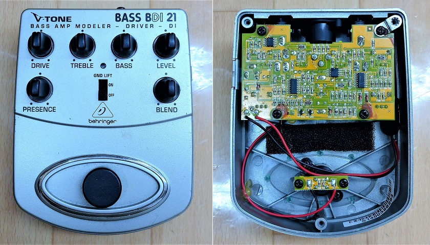
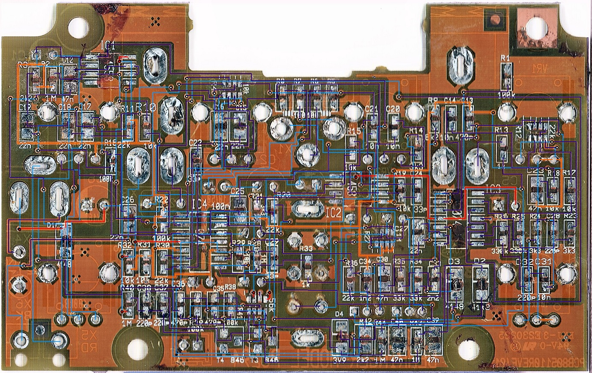
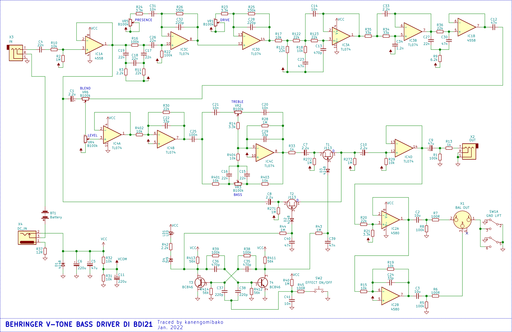
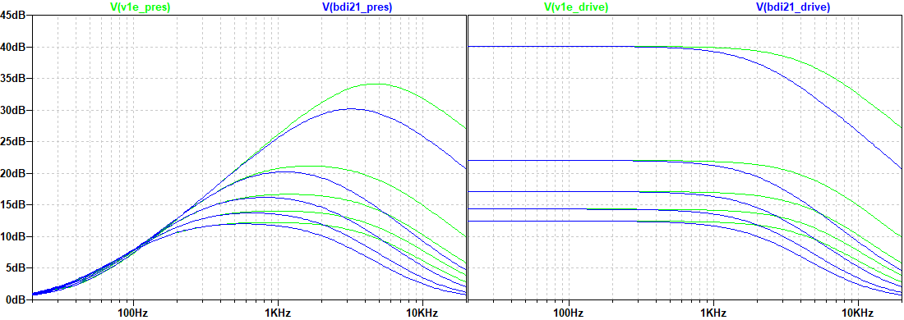
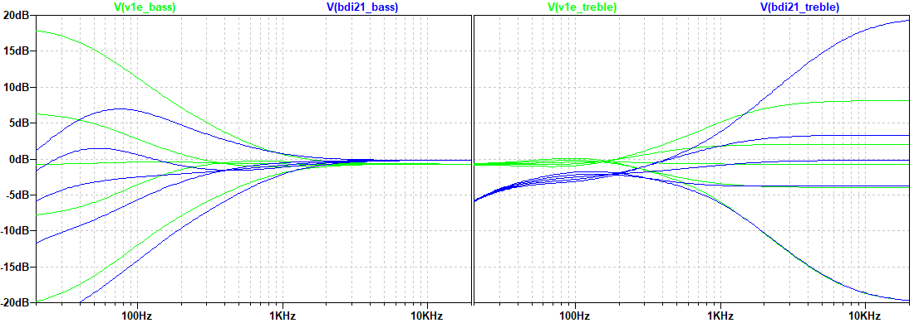

BEHRINGER V-TONE BASS DRIVER DI BDI21 解析
2022年03月18日 カテゴリー：修理・改造・解析

BEHRINGER V-TONE BASS DRIVER DI BDI21は、2006年にDizさんという方がトレースされており、簡略化されたものを以前製作しました。今回はスイッチ関連の部分も含め改めて解析し、Tech 21 SansAmp Bass Driver DI（以下BDDI） V1初期型との違いを確認します。
＜基板画像・回路図＞（KiCadデータ・高解像度画像はGitHubへ）

配線が右往左往していて大変でした。自動配線によるものかもしれません。抵抗値や容量値が印字されていますが、主要なコンデンサの値は実測し確認しています。

BDDI V1初期型（回路図：
- ファンタム電源駆動機能、パラレル出力→なし
- スイッチ関連回路→BOSSと同じタイプ
- オペアンプ TLC2264、TLC2262、TL072→TL074、4558、4580
- C4 47nF→22nF
- C22、C24、C29 22pF→33pF
- C28、C32 100pF→220pF
- C25 2.2uF→100nF
- C2、C3 47uF→10uF
- C34 1nF→1.2nF
- R37 100Ω→12Ω
- D5、R50、R51、R59→0Ω（直結）
- R20の接続先
- PRESENCE DRIVE

C28、C32が100p→220pとなっているため、高音域の減衰量が多くなっています。
- BASS TREBLE

C25が2.2uF→100nFとなっているため、全体的に低音域が減衰しています。また、BDDI V1初期型のTREBLEポット3番側にあったR51（10kΩ）がないため、高音域の増幅量が減っていません。
BDDI V1初期型とBDI21は、それなりに違っているという結果となりました。BEHRINGER社が解析した個体が特殊なものだったのかもしれませんが、C25のような明らかに違う値がある可能性は低いでしょうから、意図的に変更が加えてあると考えられます。他のBEHRINGER社のクローンエフェクターについても、元になったものから変更されている部分があるのではないかと思います。
BOSS OD-3の時もそうでしたが、ネット上ではトレースした人のミスやアレンジがそのまま掲載されていることがあります。すでに回路図が出回っているエフェクターでも、再度解析してみる価値はありそうです。（私自身もミスがあるかもしれませんので、検証結果におかしな点があるときはご連絡いただけると助かります。）